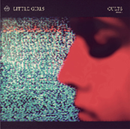

Kinetic Ideals was a Canadian new wave band from Mississauga, Ontario.
They released one single and three EPs on the Mannequin record label, formed by Paul Abrahams, manager of
the new romantic group Spoons (band).
Their first single, "Life In Shadow" / "Maze of Ways" was the second release on Burlington-based Mannequin,
following on the Spoons debut. It had a rough and ready quality with a one-two punk beat that sounded a little
retro even in 1980.
In 1981 they issued a five-track EP, Reason that established the sound they became known for, a moodier
post-Joy Division groove that fit with other locals like Sheep Look Up and Breeding Ground. Brett Wickens was by now working for Peter
Saville Associates in England, and designed an angular modernist cover in the mold of early New Order releases.

KINETIC IDEALS
This face LP
1a. This face
2a. Give and Take
1b. I am watching
2b. Who I Meant To Be

// ORDER LP
+ + + + + + + + + + + + + + + + + + + + + +
ONLINE:
http://kineticideals.com